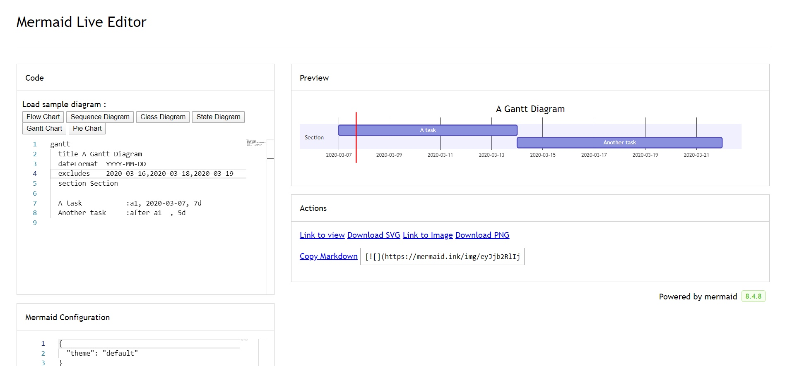
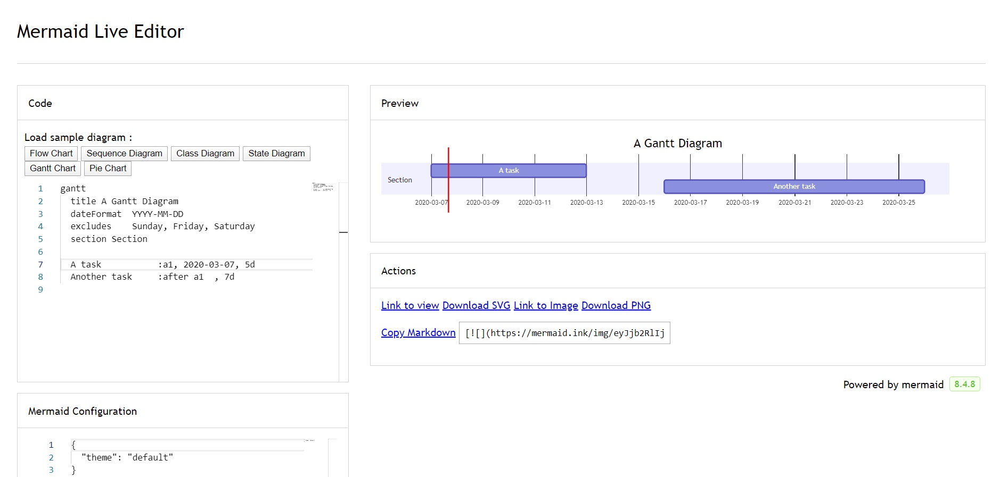

Mermaid 绘图
当撰写文档的时候，需要使用第三方工具绘制流程图，然后再将流程图导入 Markdown 有时会显得特别繁琐。Mermaid.js 可用于解决这一痛点。简单说， Mermaid.js 可看成是 Markdown 文档中一款绘图插件，其语法完全是 markdownish 的，绘图时不需要切换软件，也不需要切换思维。
详细使用指南可以参考官网
Mermaid IDE
可以直接使用Mermaid官方IDE
也可以直接在 VS Code 中，安装Markdown Preview Mermaid Support插件

流程图(Flowcharts)
所有流程图都由节点、几何形状和边、箭头或线条组成。Mermaid代码定义了这些节点和边的制作和交互方式。
它还可以容纳不同的箭头类型、多向箭头以及与子图之间的链接。
graph TB
id1(圆角矩形)--普通线-->id2[矩形];
subgraph 子图
id2==粗线==>id3{菱形}
id3-. 虚线.->id4>右向旗帜]
id3--无箭头---id5((圆形))
end
graph TB
id1(圆角矩形)--普通线-->id2[矩形];
subgraph 子图
id2==粗线==>id3{菱形}
id3-. 虚线.->id4>右向旗帜]
id3--无箭头---id5((圆形))
end
Flowchart Orientation
可能的流程图方向如下:
| 类型 | 描述 |
|---|---|
| TB | 从上到下 |
| BT | 从下到上 |
| RL | 从右到左 |
| LR | 从左到右 |
Node shapes
| 表述 | 说明 |
|---|---|
| id[文字] | 矩形节点 |
| id[[文字]] | 子程序形节点(矩形带竖杠) |
| id[(文字)] | 圆柱形节点 |
| id(文字) | 带圆角的矩形节点 |
| id([文字]) | 全圆角矩形节点 |
| id((文字)) | 圆形节点 |
| id(((文字))) | 双圆形节点 |
| id>文字] | 右向旗帜节点 |
| id{文字} | 菱形节点 |
| id{{文字}} | 六角形节点 |
| id[/文字/] | 平行四边形节点 |
| id[\文字] | 反向平行四边形节点 |
| id[/文字] | 梯形节点 |
| id[\文字/] | 倒梯形节点 |
Links between nodes
| 表述 | 说明 |
|---|---|
| --> | 添加尾部箭头 |
| --- | 不添加尾部箭头 |
--text--- 或 ---丨Text丨 |
单线上加文字 |
| == | 粗线 |
| == text == | 粗线加文字 |
| -.- | 虚线 |
| -. text .- | 虚线加文字 |
| --o | 头上带圆圈 |
| --x | 头上带叉号 |
| & | 合并调用 |
Minimum length of a link
流程图中的每个节点最终在呈现的图中被分配一个等级，即根据它链接到的节点，是垂直还是水平(取决于流程图的方向)。默认情况下，链接可以跨越任意数量的级别，但是您可以通过在链接定义中添加额外的破折号来要求任何链接比其他链接更长。
注意链接可能仍然会被渲染引擎做得比请求的等级数更长，以适应其他请求。
| 长度 | 1 | 2 | 3 |
|---|---|---|---|
| Normal | --- | ---- | ----- |
| Normal with arrow | --> | ---> | ----> |
| Thick | === | ==== | ===== |
| Thick with arrow | ==> | ===> | ====> |
| Dotted | -.- | -..- | -...- |
| Dotted with arrow | -.-> | -..-> | -...-> |
Special characters that break syntax
为了呈现更麻烦的字符，可以将文本放在引号内。如下面的例子所示:
flowchart LR
id1["This is the (text) in the box"]
Subgraphs
subgraph title
direction TB
graph definition
end
子视图也能通过节点连线来和其他节点进行关联，子视图内可以嵌套子视图，并通过direction来标明方向
示例
flowchart LR
subgraph TOP
direction TB
subgraph B1
direction RL
i1 -->f1
end
subgraph B2
direction BT
i2 -->f2
end
end
A --> TOP --> B
B1 --> B2
flowchart LR
subgraph TOP
direction TB
subgraph B1
direction RL
i1 -->f1
end
subgraph B2
direction BT
i2 -->f2
end
end
A --> TOP --> B
B1 --> B2
Interaction
click className callback "tooltip"
click className "reference" "tooltip"
click className call callback() "tooltip"
click className href "url" "tooltip"
className是操作将关联的节点的idreference可以是url链接，也可以是callback的函数名。- (可选)tooltip是当鼠标悬停在元素上时显示的字符串。
- 注意:回调函数将以nodeId作为参数调用。
默认情况下，链接在同一个浏览器选项卡/窗口中打开。可以通过给click定义添加一个链接目标来改变这一点(支持_self， _blank， _parent和_top)
flowchart LR
A-->B
B-->C
C-->D
D-->E
click A "https://www.github.com" _blank
click B "https://www.github.com" "Open this in a new tab" _blank
click C href "https://www.github.com" _blank
click D href "https://www.github.com" "Open this in a new tab" _blank
Comments
可以在流程图中输入注释，解析器将忽略这些注释。注释需要单独一行，并且必须以%%(双百分比符号)开头。下一个换行符注释开始之后的任何文本都将被视为注释，包括任何流语法。
flowchart LR
%% this is a comment A -- text --> B{node}
A -- text --> B -- text2 --> C
Styling and classes
flowchart LR
id1(Start)-->id2(Stop)
style id1 fill:#f9f,stroke:#333,stroke-width:4px
style id2 fill:#bbf,stroke:#f66,stroke-width:2px,color:#fff,stroke-dasharray: 5 5
flowchart LR
id1(Start)-->id2(Stop)
style id1 fill:#f9f,stroke:#333,stroke-width:4px
style id2 fill:#bbf,stroke:#f66,stroke-width:2px,color:#fff,stroke-dasharray: 5 5
也可以通过CSS和classDef来定义
Basic support for fontawesome
可以从fontawesome添加图标。
这些图标是通过语法fa:图标类名访问的。
flowchart TD
B["fa:fa-twitter for peace"]
B-->C[fa:fa-ban forbidden]
B-->D(fa:fa-spinner);
B-->E(A fa:fa-camera-retro perhaps?)
flowchart TD
B["fa:fa-twitter for peace"]
B-->C[fa:fa-ban forbidden]
B-->D(fa:fa-spinner);
B-->E(A fa:fa-camera-retro perhaps?)
时序图(Sequence diagrams)
序列图是一种交互图，它显示流程如何彼此操作以及以何种顺序操作。
sequenceDiagram
participant Alice
actor Bob
Boy->>Girl: Hello!
Girl-->>Boy: Hi!
Boy-)Girl: Yeah.
sequenceDiagram
participant Alice
actor Bob
Boy->>Girl: Hello!
Girl--xBoy: Hi!
Boy-)Girl: Yeah.
Participants(参与者)
参与者，可以直接写title来隐式定义，也可以通过participant title来定义
sequenceDiagram
participant Alice
participant Bob
Alice->>Bob: Hi Bob
Bob->>Alice: Hi Alice
Actors(人物符号)
特殊的Participants，如果您想使用actor符号而不是带有文本的矩形，可以使用actor [actor]
sequenceDiagram
actor Alice
actor Bob
Alice->>Bob: Hi Bob
Bob->>Alice: Hi Alice
Aliases(别名)
可以通过定义别名，来使调用更加简短
sequenceDiagram
participant A as Alice
participant J as John
A->>J: Hello John, how are you?
J->>A: Great!
Messages(消息线)
Messages可以是两种形式，实线或虚线显示。
[Actor][Arrow][Actor]:Message text
| 类型 | 描述 |
|---|---|
| -> | 没有箭头的实线 |
| --> | 没有箭头的虚线 |
| ->> | 带箭头的实线 |
| -->> | 带箭头的虚线 |
| -x | 末端带叉号的实线 |
| --x | 末端带叉号的虚线 |
| -) | 带Open箭头的实线 |
| --) | 带Open箭头的虚线 |
Activations
通过activate [actor]和deactivate [actor]来激活Actor上的显示区块
sequenceDiagram
Alice->>John: Hello John, how are you?
activate John
John-->>Alice: Great!
deactivate John
sequenceDiagram
Alice->>John: Hello John, how are you?
activate John
John-->>Alice: Great!
deactivate John
同样可以通过在Messages尾部添加+/-来快速实现
sequenceDiagram
Alice->>+John: Hello John, how are you?
John-->>-Alice: Great!
在同一个Participants中可以进行多个Ativations堆叠
sequenceDiagram
Alice->>+John: Hello John, how are you?
Alice->>+John: John, can you hear me?
John-->>-Alice: Hi Alice, I can hear you!
John-->>-Alice: I feel great!
sequenceDiagram
Alice->>+John: Hello John, how are you?
Alice->>+John: John, can you hear me?
John-->>-Alice: Hi Alice, I can hear you!
John-->>-Alice: I feel great!
Notes
可以向序列图添加注释。
Note [ right of | left of | over ] [Actor]: Text in note content
sequenceDiagram
participant John
Note right of John: Text in note
sequenceDiagram
Alice->John: Hello John, how are you?
Note over Alice,John: A typical interaction
sequenceDiagram
Alice->John: Hello John, how are you?
Note over Alice,John: A typical interaction
Loops
可以在序列图中表示循环。
loop Loop text
... statements ...
end
示例
sequenceDiagram
Alice->John: Hello John, how are you?
loop Every minute
John-->Alice: Great!
end
sequenceDiagram
Alice->John: Hello John, how are you?
loop Every minute
John-->Alice: Great!
end
Alt
可以在序列图中表示备选路径。
alt Describing text
... statements ...
else
... statements ...
end
或者如果序列是可选的
opt Describing text
... statements ...
end
示例
sequenceDiagram
Alice->>Bob: Hello Bob, how are you?
alt is sick
Bob->>Alice: Not so good :(
else is well
Bob->>Alice: Feeling fresh like a daisy
end
opt Extra response
Bob->>Alice: Thanks for asking
end
sequenceDiagram
Alice->>Bob: Hello Bob, how are you?
alt is sick
Bob->>Alice: Not so good :(
else is well
Bob->>Alice: Feeling fresh like a daisy
end
opt Extra response
Bob->>Alice: Thanks for asking
end
Parallel
可以显示并行发生的动作。
par [Action 1]
... statements ...
and [Action 2]
... statements ...
and [Action N]
... statements ...
end
示例
sequenceDiagram
par Alice to Bob
Alice->>Bob: Hello guys!
and Alice to John
Alice->>John: Hello guys!
end
Bob-->>Alice: Hi Alice!
John-->>Alice: Hi Alice!
sequenceDiagram
par Alice to Bob
Alice->>Bob: Hello guys!
and Alice to John
Alice->>John: Hello guys!
end
Bob-->>Alice: Hi Alice!
John-->>Alice: Hi Alice!
同样嵌套并行块
sequenceDiagram
par Alice to Bob
Alice->>Bob: Go help John
and Alice to John
Alice->>John: I want this done today
par John to Charlie
John->>Charlie: Can we do this today?
and John to Diana
John->>Diana: Can you help us today?
end
end
sequenceDiagram
par Alice to Bob
Alice->>Bob: Go help John
and Alice to John
Alice->>John: I want this done today
par John to Charlie
John->>Charlie: Can we do this today?
and John to Diana
John->>Diana: Can you help us today?
end
end
Critical Region
通过对环境的有条件处理，可以显示必须自动发生的操作。
critical [Action that must be performed]
... statements ...
option [Circumstance A]
... statements ...
option [Circumstance B]
... statements ...
end
示例
sequenceDiagram
critical Establish a connection to the DB
Service-->DB: connect
option Network timeout
Service-->Service: Log error
option Credentials rejected
Service-->Service: Log different error
end
该临界区块和并行块一样可以嵌套使用
Break
可以在流中指示序列的停止(通常用于对异常建模)。
break [something happened]
... statements ...
end
示例
sequenceDiagram
Consumer-->API: Book something
API-->BookingService: Start booking process
break when the booking process fails
API-->Consumer: show failure
end
API-->BillingService: Start billing process

Background Highlighting
可以通过提供彩色背景矩形来突出显示流。颜色可以用RGB或者RGBA来表示。
rect rgb(0, 255, 0)
... content ...
end
rect rgba(0, 0, 255, .1)
... content ...
end
示例
sequenceDiagram
participant Alice
participant John
rect rgb(191, 223, 255)
note right of Alice: Alice calls John.
Alice->>+John: Hello John, how are you?
rect rgb(200, 150, 255)
Alice->>+John: John, can you hear me?
John-->>-Alice: Hi Alice, I can hear you!
end
John-->>-Alice: I feel great!
end
Alice ->>+ John: Did you want to go to the game tonight?
John -->>- Alice: Yeah! See you there.
sequenceDiagram
participant Alice
participant John
rect rgb(191, 223, 255)
note right of Alice: Alice calls John.
Alice->>+John: Hello John, how are you?
rect rgb(200, 150, 255)
Alice->>+John: John, can you hear me?
John-->>-Alice: Hi Alice, I can hear you!
end
John-->>-Alice: I feel great!
end
Alice ->>+ John: Did you want to go to the game tonight?
John -->>- Alice: Yeah! See you there.
Comments
注释可以在序列图中输入，解析器会忽略注释。注释需要单独一行，并且必须以%%(双百分比符号)开头。从注释开始到下一个换行符之后的任何文本都将被视为注释，包括任何图表语法。
sequenceDiagram
Alice->>John: Hello John, how are you?
%% this is a comment
John-->>Alice: Great!
Entity codes to escape characters
图标语法中的转义符可以参考示例的语法转义字符。
sequenceDiagram
A->>B: I #9829; you!
B->>A: I #9829; you #infin; times more!
sequenceNumbers
在序列图中，可以在每个箭头上附加一个序号。
sequenceDiagram
autonumber
Alice->>John: Hello John, how are you?
loop Healthcheck
John->>John: Fight against hypochondria
end
Note right of John: Rational thoughts!
John-->>Alice: Great!
John->>Bob: How about you?
Bob-->>John: Jolly good!
sequenceDiagram
autonumber
Alice->>John: Hello John, how are you?
loop Healthcheck
John->>John: Fight against hypochondria
end
Note right of John: Rational thoughts!
John-->>Alice: Great!
John->>Bob: How about you?
Bob-->>John: Jolly good!
Actor Menus
参与者可以拥有包含指向外部页面的个性化链接的弹出菜单。例如，如果参与者表示web服务，则有用的链接可能包括指向服务运行状况指示板的链接、包含服务代码的repo或描述该服务的wiki页面。
link <actor>: <link-label> @ <link-url>
示例
sequenceDiagram
participant Alice
participant John
link Alice: Dashboard @ https://dashboard.contoso.com/alice
link Alice: Wiki @ https://wiki.contoso.com/alice
link John: Dashboard @ https://dashboard.contoso.com/john
link John: Wiki @ https://wiki.contoso.com/john
Alice->>John: Hello John, how are you?
John-->>Alice: Great!
Alice-)John: See you later!
Advanced Menu Syntax
有一种依赖于JSON格式化的高级语法。如果您熟悉JSON格式，那么这种格式也存在。
links <actor>: <json-formatted link-name link-url pairs>
sequenceDiagram
participant Alice
participant John
links Alice: {"Dashboard": "https://dashboard.contoso.com/alice", "Wiki": "https://wiki.contoso.com/alice"}
links John: {"Dashboard": "https://dashboard.contoso.com/john", "Wiki": "https://wiki.contoso.com/john"}
Alice->>John: Hello John, how are you?
John-->>Alice: Great!
Alice-)John: See you later!
Styling 自定义样式
可以通过自定义css文件来实现。主要参考官网
UML 类图(Class diagrams)
在软件工程中，统一建模语言(UML)中的类图是一种静态结构图，它通过显示系统的类、它们的属性、操作(或方法)以及对象之间的关系来描述系统的结构。
类图是面向对象建模的主要构建块。它用于应用程序结构的一般概念建模，以及将模型转换为编程代码的详细建模。类图还可以用于数据建模。类图中的类既表示主要元素、应用程序中的交互，也表示要编程的类。
classDiagram
Animal <|-- Duck
Animal <|-- Fish
Animal <|-- Zebra
Animal : +int age
Animal : +String gender
Animal: +isMammal()
Animal: +mate()
class Duck{
+String beakColor
+swim()
+quack()
}
class Fish{
-int sizeInFeet
-canEat()
}
class Zebra{
+bool is_wild
+run()
}
classDiagram
Animal <|-- Duck
Animal <|-- Fish
Animal <|-- Zebra
Animal : +int age
Animal : +String gender
Animal: +isMammal()
Animal: +mate()
class Duck{
+String beakColor
+swim()
+quack()
}
class Fish{
-int sizeInFeet
-canEat()
}
class Zebra{
+bool is_wild
+run()
}
Class
UML提供了表示类成员的机制，例如属性和方法，以及关于它们的附加信息。图中类的单个实例包含三个部分:
- 顶部的隔间包含类的名称。它以粗体和居中打印，并且第一个字母是大写的。它还可以包含描述类性质的可选注释文本。
- 中间的隔间包含类的属性。它们是左对齐的，第一个字母是小写的。
- 底部的分隔符包含类可以执行的方法。它们也是左对齐的，第一个字母是小写的
classDiagram
class BankAccount
BankAccount : +String owner
BankAccount : +Bigdecimal balance
BankAccount : +deposit(amount)
BankAccount : +withdrawal(amount)
classDiagram
class BankAccount
BankAccount : +String owner
BankAccount : +Bigdecimal balance
BankAccount : +deposit(amount)
BankAccount : +withdrawal(amount)
Define a class
定义类有两种方法:
- 使用像
class Animal这样的关键字class显式定义一个类。这定义了Animal类 - 通过两个类之间的关系定义两个类
Vehicle <|-- Car。这定义了两个类Vehicle和Car及其关系。
classDiagram
class Animal
Vehicle <|-- Car
classDiagram
class Animal
Vehicle <|-- Car
Defining Members of a class
UML提供了表示类成员的机制，例如属性和方法，以及关于它们的附加信息。
Mermaid根据是否存在圆括号()来区分属性和函数/方法。带有()的函数被视为函数/方法，其他的则被视为属性。
定义类成员有两种方法，无论使用哪一种语法来定义成员，输出都是相同的。两种不同的方式是:
- 使用
:后跟成员名关联类的成员，每次定义一个成员很有用。例如:
classDiagram
class BankAccount
BankAccount : +String owner
BankAccount : +BigDecimal balance
BankAccount : +deposit(amount)
BankAccount : +withdrawal(amount)
classDiagram
class BankAccount
BankAccount : +String owner
BankAccount : +BigDecimal balance
BankAccount : +deposit(amount)
BankAccount : +withdrawal(amount)
- 使用
{}关联类的成员，其中成员在花括号中分组。适合一次定义多个成员。例如:
classDiagram
class BankAccount{
+String owner
+BigDecimal balance
+deposit(amount)
+withdrawal(amount)
}
classDiagram
class BankAccount{
+String owner
+BigDecimal balance
+deposit(amount)
+withdrawal(amount)
}
Return Type
可以通过使用方法定义和返回类型的返回数据类型来表示返回值类型
classDiagram
class BankAccount{
+String owner
+BigDecimal balance
+deposit(amount) bool
+withdrawal(amount) int
}
classDiagram
class BankAccount{
+String owner
+BigDecimal balance
+deposit(amount) bool
+withdrawal(amount) int
}
Generic Types
可以使用泛型类型定义成员，例如List<int>，通过将类型括在~中来定义字段、参数和返回类型。注意:目前不支持嵌套类型声明(如List<List<int>>
classDiagram
class Square~Shape~{
int id
List~int~ position
setPoints(List~int~ points)
getPoints() List~int~
Square : -List~string~ messages
Square : +setMessages(List~string~ messages)
Square : +getMessages() List~string~
classDiagram
class Square~Shape~{
int id
List~int~ position
setPoints(List~int~ points)
getPoints() List~int~
}
Square : -List~string~ messages
Square : +setMessages(List~string~ messages)
Square : +getMessages() List~string~
Visibility
要指定类成员(即任何属性或方法)的可见性，这些标记可以放在成员名之前，该定义是可选的:
+Public-Private#Protected~Package/Internal
还有标记放在末尾表示其他定义
*Abstract$Static
Defining Relationship
关系是一个通用术语，涵盖了在类和对象图中发现的特定类型的逻辑连接。
[classA][Arrow][ClassB]
| 类型 | 描述 |
|---|---|
| <丨-- | 继承 |
| *-- | 组合 |
| o-- | 聚合 |
| --> | 关联 |
| -- | 实线连接 |
| ..> | 依赖 |
| .. | > |
| .. | 虚线连接 |
classDiagram
classA --|> classB : Inheritance
classC --* classD : Composition
classE --o classF : Aggregation
classG --> classH : Association
classI -- classJ : Link(Solid)
classK ..> classL : Dependency
classM ..|> classN : Realization
classO .. classP : Link(Dashed)
classDiagram
classA --|> classB : Inheritance
classC --* classD : Composition
classE --o classF : Aggregation
classG --> classH : Association
classI -- classJ : Link(Solid)
classK ..> classL : Dependency
classM ..|> classN : Realization
classO .. classP : Link(Dashed)
Labels on Relations
可以向关系中添加标签文本
[classA][Arrow][ClassB]:LabelText
示例
classDiagram
classA <|-- classB : implements
classC *-- classD : composition
classE o-- classF : aggregation
classDiagram
classA <|-- classB : implements
classC *-- classD : composition
classE o-- classF : aggregation
Two-way relations
关系可以有多种方式:
classDiagram
Animal <|--|> Zebra
语法
[Relation Type][Link][Relation Type]
关系类型表:
| 类型 | 描述 |
|---|---|
| <丨 | 继承 |
| * | 组合 |
| o | 聚合 |
| > | 关联 |
| < | 关联 |
| 丨> | 实现 |
连接方式表
| 类型 | 描述 |
|---|---|
| --丨 | 实线 |
| .. | 虚线 |
Cardinality / Multiplicity on relations
类图中的多重性或基数性表示一个类的实例数量链接到另一个类的一个实例。例如，一个公司将有一个或多个员工，但每个员工只为一个公司工作。
多重符号被放置在一个关联的末端附近。
不同的基数选项有:
1Only 10..1Zero or One1..*One or more*Manynn {where n>1}0..nzero to n {where n>1}1..none to n {where n>1}
在给定箭头的前面(可选)和后面(可选)引号中放置带"的文本，可以很容易地定义基数。
[classA] "cardinality1" [Arrow] "cardinality2" [ClassB]:LabelText
示例
classDiagram
Customer "1" --> "*" Ticket
Student "1" --> "1..*" Course
Galaxy --> "many" Star : Contains
classDiagram
Customer "1" --> "*" Ticket
Student "1" --> "1..*" Course
Galaxy --> "many" Star : Contains
Annotations on classes
可以用类似于类元数据的特定标记文本对类进行注释，从而对类的性质给出明确的指示。一些常见的注释示例可能是:
<<Interface>>To represent an Interface class<<abstract>>To represent an abstract class<<Service>>To represent a service class<<enumeration>>To represent an enum
# 方式一
classDiagram
class Shape
<<interface>> Shape
Shape : noOfVertices
Shape : draw()
# 方式二
classDiagram
class Shape{
<<interface>>
noOfVertices
draw()
}
class Color{
<<enumeration>>
RED
BLUE
GREEN
WHITE
BLACK
}

Comments
注释可以在类图中输入，解析器会忽略注释。注释需要单独一行，并且必须以%%(双百分比符号)开头。从注释开始到下一个换行符之后的任何文本都将被视为注释，包括任何类图语法。
classDiagram
%% This whole line is a comment classDiagram class Shape <<interface>>
class Shape{
<<interface>>
noOfVertices
draw()
}
Setting the direction of the diagram
对于类图，您可以使用direction语句来设置图呈现的方向，就像本例中一样。
classDiagram
direction RL
class Student {
-idCard : IdCard
}
class IdCard{
-id : int
-name : string
}
class Bike{
-id : int
-name : string
}
Student "1" --o "1" IdCard : carries
Student "1" --o "1" Bike : rides
classDiagram
direction RL
class Student {
-idCard : IdCard
}
class IdCard{
-id : int
-name : string
}
class Bike{
-id : int
-name : string
}
Student "1" --o "1" IdCard : carries
Student "1" --o "1" Bike : rides
Interaction 交互
action className "reference" "tooltip"
click className call callback() "tooltip"
click className href "url" "tooltip"
action可以是link或者callback，这取决于您想要调用的交互类型className是操作将关联的节点的idreference可以是url链接，也可以是callback的函数名。- (可选)tooltip是当鼠标悬停在元素上时显示的字符串。
- 注意:回调函数将以nodeId作为参数调用。
示例
URL Link:
classDiagram
class Shape
link Shape "https://www.github.com" "This is a tooltip for a link"
class Shape2
click Shape2 href "https://www.github.com" "This is a tooltip for a link"
Callback:
classDiagram
class Shape
callback Shape "callbackFunction" "This is a tooltip for a callback"
class Shape2
click Shape2 call callbackFunction() "This is a tooltip for a callback"
<script>
var callbackFunction = function () {
alert('A callback was triggered');
};
</script>
实现Callback需要写js代码
Styling 自定义样式
可以通过自定义css文件来实现。主要参考官网
状态图(State diagrams)
状态图是计算机科学和相关领域中用来描述系统行为的一种图。状态图要求所描述的系统由有限数量的状态组成;有时确实如此，但有时这是合理的抽象。
stateDiagram-v2
[*] --> Still
Still --> [*]
Still --> Moving
Moving --> Still
Moving --> Crash
Crash --> [*]
stateDiagram-v2
[*] --> Still
Still --> [*]
Still --> Moving
Moving --> Still
Moving --> Crash
Crash --> [*]
在状态图中，系统是根据其状态以及系统状态如何通过转换转变为另一状态来描述的。上面的示例图显示了静止、移动和崩溃三种状态。从静止状态开始。在静止状态时，你可以改变状态为移动。在移动状态中，你可以将状态改为静止或崩溃。从静止到崩溃没有过渡。
States
状态可以用多种方式声明。最简单的方法是将状态id定义为描述。
stateDiagram-v2
s1
另一种方法是使用state关键字并描述如下:
stateDiagram-v2
state "This is a state description" as s2
用描述定义状态的另一种方法是定义状态id，后跟冒号和描述:
stateDiagram-v2
s2 : This is a state description
Transitions
当一个状态传递到另一个状态时，转换是路径/边。这用文本箭头“——>”表示。
当您定义两个状态之间的转换时，如果状态还没有定义，那么未定义的状态将使用转换的id定义。稍后，您可以向以这种方式定义的状态添加描述。
stateDiagram-v2
s1 --> s2
stateDiagram-v2
s1 --> s2
可以向转换中添加文本。来描述它所代表的东西。
stateDiagram-v2
s1 --> s2: A transition
stateDiagram-v2
s1 --> s2: A transition
Start and End
有两种特殊状态指示图的启动和停止。它们是用[*]语法编写的，转换方向将其定义为启动或停止状态。
stateDiagram-v2
[*] --> s1
s1 --> [*]
stateDiagram-v2
[*] --> s1
s1 --> [*]
Composite states
在现实世界中使用状态图时，通常会得到多维的图，因为一个状态可以有多个内部状态。在这个术语中，这些被称为复合状态。
为了定义复合状态，您需要使用state关键字，后跟一个id，并在{}之间使用复合状态的主体。请看下面的例子:
stateDiagram-v2
[*] --> First
state First {
[*] --> Second
state Second {
[*] --> second
second --> Third
state Third {
[*] --> third
third --> [*]
}
}
}
stateDiagram-v2
[*] --> First
state First {
[*] --> Second
state Second {
[*] --> second
second --> Third
state Third {
[*] --> third
third --> [*]
}
}
}
你也可以定义复合状态之间的转换:
stateDiagram-v2
[*] --> First
First --> Second
First --> Third
state First {
[*] --> fir
fir --> [*]
}
state Second {
[*] --> sec
sec --> [*]
}
state Third {
[*] --> thi
thi --> [*]
}
stateDiagram-v2
[*] --> First
First --> Second
First --> Third
state First {
[*] --> fir
fir --> [*]
}
state Second {
[*] --> sec
sec --> [*]
}
state Third {
[*] --> thi
thi --> [*]
}
Choice
有时你需要对两个或多个路径的选择进行建模，你可以使用<<choice>>
stateDiagram-v2
state if_state <<choice>>
[*] --> IsPositive
IsPositive --> if_state
if_state --> False: if n < 0
if_state --> True : if n >= 0
stateDiagram-v2
state if_state <<choice>>
[*] --> IsPositive
IsPositive --> if_state
if_state --> False: if n < 0
if_state --> True : if n >= 0
Forks
可以使用<<fork>>和<<join>>来处理分叉逻辑。
stateDiagram-v2
state fork_state <<fork>>
[*] --> fork_state
fork_state --> State2
fork_state --> State3
state join_state <<join>>
State2 --> join_state
State3 --> join_state
join_state --> State4
State4 --> [*]
stateDiagram-v2
state fork_state <<fork>>
[*] --> fork_state
fork_state --> State2
fork_state --> State3
state join_state <<join>>
State2 --> join_state
State3 --> join_state
join_state --> State4
State4 --> [*]
Notes
有时候没有什么比便利贴更能说明问题了。在状态图中也是如此。
在这里，您可以选择将注释放在节点的右边(right of)或左边(left of)。
stateDiagram-v2
State1: The state with a note
note right of State1
Important information! You can write
notes.
end note
State1 --> State2
note left of State2 : This is the note to the left.
stateDiagram-v2
State1: The state with a note
note right of State1
Important information! You can write
notes.
end note
State1 --> State2
note left of State2 : This is the note to the left.
Concurrency
你可以使用——符号来指定并发性。
stateDiagram-v2
[*] --> Active
state Active {
[*] --> NumLockOff
NumLockOff --> NumLockOn : EvNumLockPressed
NumLockOn --> NumLockOff : EvNumLockPressed
--
[*] --> CapsLockOff
CapsLockOff --> CapsLockOn : EvCapsLockPressed
CapsLockOn --> CapsLockOff : EvCapsLockPressed
--
[*] --> ScrollLockOff
ScrollLockOff --> ScrollLockOn : EvScrollLockPressed
ScrollLockOn --> ScrollLockOff : EvScrollLockPressed
}
stateDiagram-v2
[*] --> Active
state Active {
[*] --> NumLockOff
NumLockOff --> NumLockOn : EvNumLockPressed
NumLockOn --> NumLockOff : EvNumLockPressed
--
[*] --> CapsLockOff
CapsLockOff --> CapsLockOn : EvCapsLockPressed
CapsLockOn --> CapsLockOff : EvCapsLockPressed
--
[*] --> ScrollLockOff
ScrollLockOff --> ScrollLockOn : EvScrollLockPressed
ScrollLockOn --> ScrollLockOff : EvScrollLockPressed
}
Setting the direction of the diagram
对于状态图，您可以使用direction语句来设置图呈现的方向，就像本例中一样。
stateDiagram
direction LR
[*] --> A
A --> B
B --> C
state B {
direction LR
a --> b
}
B --> D
stateDiagram
direction LR
[*] --> A
A --> B
B --> C
state B {
direction LR
a --> b
}
B --> D
Comments
注释可以在状态图中输入，解析器将忽略它。注释需要单独一行，并且必须以%%(双百分比符号)开头。从注释开始到下一个换行符之后的任何文本都将被视为注释，包括任何图表语法
stateDiagram-v2
[*] --> Still
Still --> [*]
%% this is a comment
Still --> Moving
Moving --> Still %% another comment
Moving --> Crash
Crash --> [*]
实体关系图(Entity Relationship Diagrams)
实体关系模型(或ER模型)描述特定知识领域中感兴趣的相互关联的事物。基本ER模型由实体类型(对感兴趣的事物进行分类)组成，并指定实体之间可能存在的关系(这些实体类型的实例)。
请注意，ER建模的实践者几乎总是将实体类型简单地称为实体。例如，CUSTOMER实体类型将被简单地称为CUSTOMER实体。这是如此常见，以至于不建议做任何其他事情，但从技术上讲，实体是实体类型的抽象实例，这就是ER图所显示的——抽象实例，以及它们之间的关系。这就是为什么实体总是使用单数名词命名的原因。
erDiagram
CUSTOMER ||--o{ ORDER : places
ORDER ||--|{ LINE-ITEM : contains
CUSTOMER }|..|{ DELIVERY-ADDRESS : uses
erDiagram
CUSTOMER ||--o{ ORDER : places
ORDER ||--|{ LINE-ITEM : contains
CUSTOMER }|..|{ DELIVERY-ADDRESS : uses
实体名称通常是大写的，尽管在这方面没有公认的标准，在mermaid中也没有要求。
实体之间的关系由带有结束标记的行表示，这些行表示基数。mermaid使用了最流行的鱼尾纹符号。鱼尾纹直观地传达了它所连接的实体的多个实例的可能性。
ER图可以用于各种目的，从缺乏任何实现细节的抽象逻辑模型，到关系数据库表的物理模型。在ER图中包含属性定义有助于理解实体的目的和意义，这是很有用的。这些并不一定是详尽的;通常，属性的一小部分就足够了。mermaid允许人们根据他们的类型和名字来定义他们。
erDiagram
CUSTOMER ||--o{ ORDER : places
CUSTOMER {
string name
string custNumber
string sector
}
ORDER ||--|{ LINE-ITEM : contains
ORDER {
int orderNumber
string deliveryAddress
}
LINE-ITEM {
string productCode
int quantity
float pricePerUnit
}
erDiagram
CUSTOMER ||--o{ ORDER : places
CUSTOMER {
string name
string custNumber
string sector
}
ORDER ||--|{ LINE-ITEM : contains
ORDER {
int orderNumber
string deliveryAddress
}
LINE-ITEM {
string productCode
int quantity
float pricePerUnit
}
Entities and Relationships
ER图的Mermaid语法与PlantUML兼容，并具有一个用于标记关系的扩展。每项陈述由以下部分组成:
<first-entity> [<relationship> <second-entity> : <relationship-label>]
first-entity是实体的名称。名称必须以字母开头，也可以包含数字、连字符和下划线。relationship描述了两个实体相互关联的方式。见下文。second-entity是另一个实体的名称。relationship-label从第一个实体的角度描述关系。
Relationship Syntax
每个语句的relationship部分可以分解为三个子部分:
- 第一个实体相对于第二个实体的基数，
- 关系是否赋予"孩子"实体的身份
- 第二个实体相对于第一个实体的基数
基数是一个属性，用于描述另一个实体的多少元素可以与相关实体相关。在上面的例子中，一个PROPERTY可以有一个或多个ROOM实例相关联，而一个ROOM只能与一个PROPERTY相关联。在每个基数标记中有两个字符。最外面的字符表示最大值，最里面的字符表示最小值。下表总结了可能的基数。
| Value (left) | Value (right) | Meaning |
|---|---|---|
| 丨o | o丨 | Zero or one |
| 丨丨 | 丨丨 | Exactly one |
| }o | o{ | Zero or more (no upper limit) |
| }丨 | 丨{ | One or more (no upper limit) |
Identification
关系可以分为可识别的或不可识别的，它们分别用实线或虚线呈现。当其中一个实体不能独立存在而没有另一个实体时，这是相关的。例如，一家为人们驾驶汽车提供保险的公司可能需要在name - drivers上存储数据。在建模过程中，我们可以从观察到CAR可以由许多PERSON实例驱动开始，而PERSON可以驱动许多CAR -两个实体可以独立存在，因此这是一种非识别关系，我们可以在《美人鱼》中指定为:PERSON }|..|{ CAR : "driver"。请注意关系中间的两个点，它们将导致在两个实体之间绘制一条虚线。但是，当这个多对多关系被分解为两个一对多关系时，我们观察到一个name - driver不能同时存在PERSON和CAR—这些关系将被识别并使用连字符来指定，它转化为一条实线:
erDiagram
CAR ||--o{ NAMED-DRIVER : allows
PERSON ||--o{ NAMED-DRIVER : is
erDiagram
CAR ||--o{ NAMED-DRIVER : allows
PERSON ||--o{ NAMED-DRIVER : is
Attributes
可以为实体定义属性，方法是指定实体名称后跟一个包含多个type name的块，其中一个块由开始的{和结束的}分隔。
erDiagram
CAR ||--o{ NAMED-DRIVER : allows
CAR {
string registrationNumber
string make
string model
}
PERSON ||--o{ NAMED-DRIVER : is
PERSON {
string firstName
string lastName
int age
}
erDiagram
CAR ||--o{ NAMED-DRIVER : allows
CAR {
string registrationNumber
string make
string model
}
PERSON ||--o{ NAMED-DRIVER : is
PERSON {
string firstName
string lastName
int age
}
type和name值必须以字母开头，可以包含数字、连字符或下划线。除此之外，没有任何限制，也没有隐含的有效数据类型集。
Attribute Keys and Comments
属性还可以定义一个key或注释。键可以是PK或FK，为主键或外键。注释由属性末尾的双引号定义。注释本身不能包含双引号字符。
erDiagram
CAR ||--o{ NAMED-DRIVER : allows
CAR {
string allowedDriver FK "The license of the allowed driver"
string registrationNumber
string make
string model
}
PERSON ||--o{ NAMED-DRIVER : is
PERSON {
string driversLicense PK "The license #"
string firstName
string lastName
int age
}

- 如果希望关系标签不止一个单词，则必须在短语周围使用双引号
- 如果您根本不想在关系上使用标签，则必须使用空的双引号字符串
用户旅程图(User Journey Diagram)
用户旅程高度详细地描述了不同用户在系统、应用程序或网站中完成特定任务时所采取的步骤。这项技术显示了当前(原样)的用户工作流，并揭示了未来工作流的改进区域。
journey
title My working day
section Go to work
Make tea: 5: Me
Go upstairs: 3: Me
Do work: 1: Me, Cat
section Go home
Go downstairs: 5: Me
Sit down: 5: Me
journey
title My working day
section Go to work
Make tea: 5: Me
Go upstairs: 3: Me
Do work: 1: Me, Cat
section Go home
Go downstairs: 5: Me
Sit down: 5: Me
每个用户旅程都被分成几个部分，这些部分描述了用户试图完成的任务部分。
任务语法:
Task name: <score>: <comma separated list of actors>
甘特图(Gantt diagrams)
甘特图是一种柱状图，1896年由Karol Adamiecki首次提出，1910年代由Henry Gantt独立提出，用来说明一个项目的时间表以及完成任何一个项目所需的时间。甘特图说明项目的终端元素和汇总元素的开始和结束日期之间的天数。
A note to users
甘特图将把每个计划的任务记录为一个从左到右的连续条形图。x轴代表时间，y轴记录不同的任务以及它们要完成的顺序。
重要的是要记住，当一个特定于任务的日期、日期或日期集合被“排除”时，甘特图将通过向右延长等量的天数来适应这些更改，而不是通过在任务内部创建间隙来适应这些更改。如下所示

但是，如果排除日期在两个设置为连续开始的任务之间，则排除日期将以图形方式跳过并留空，以下任务将在排除日期结束后开始。如下所示

甘特图对于跟踪项目完成前所需的时间很有用，但它也可以用于图形化地表示“非工作天”，只需要进行一些调整。
Mermaid可以将甘特图渲染成SVG、PNG或可以粘贴到文档中的MarkDown链接。
gantt
dateFormat YYYY-MM-DD
title Adding GANTT diagram functionality to mermaid
excludes weekends
%% (`excludes` accepts specific dates in YYYY-MM-DD format, days of the week ("sunday") or "weekends", but not the word "weekdays".)
section A section
Completed task :done, des1, 2014-01-06,2014-01-08
Active task :active, des2, 2014-01-09, 3d
Future task : des3, after des2, 5d
Future task2 : des4, after des3, 5d
section Critical tasks
Completed task in the critical line :crit, done, 2014-01-06,24h
Implement parser and jison :crit, done, after des1, 2d
Create tests for parser :crit, active, 3d
Future task in critical line :crit, 5d
Create tests for renderer :2d
Add to mermaid :1d
Functionality added :milestone, 2014-01-25, 0d
section Documentation
Describe gantt syntax :active, a1, after des1, 3d
Add gantt diagram to demo page :after a1 , 20h
Add another diagram to demo page :doc1, after a1 , 48h
section Last section
Describe gantt syntax :after doc1, 3d
Add gantt diagram to demo page :20h
Add another diagram to demo page :48h
gantt
dateFormat YYYY-MM-DD
title Adding GANTT diagram functionality to mermaid
excludes weekends
%% (`excludes` accepts specific dates in YYYY-MM-DD format, days of the week ("sunday") or "weekends", but not the word "weekdays".)
section A section
Completed task :done, des1, 2014-01-06,2014-01-08
Active task :active, des2, 2014-01-09, 3d
Future task : des3, after des2, 5d
Future task2 : des4, after des3, 5d
section Critical tasks
Completed task in the critical line :crit, done, 2014-01-06,24h
Implement parser and jison :crit, done, after des1, 2d
Create tests for parser :crit, active, 3d
Future task in critical line :crit, 5d
Create tests for renderer :2d
Add to mermaid :1d
Functionality added :milestone, 2014-01-25, 0d
section Documentation
Describe gantt syntax :active, a1, after des1, 3d
Add gantt diagram to demo page :after a1 , 20h
Add another diagram to demo page :doc1, after a1 , 48h
section Last section
Describe gantt syntax :after doc1, 3d
Add gantt diagram to demo page :20h
Add another diagram to demo page :48h
可以用空格分隔多个依赖项
Title
标题是显示在甘特图顶部的可选字符串，用于描述整个图表。
Section statements
您可以将图表分成不同的部分，例如，将项目的不同部分，如开发和文档。
为此，以section关键字开始一行，并给它一个名称。(注意，与整个图表的标题不同，这个名称是必需的)
Milestones
您可以向关系图添加里程碑。里程碑与任务不同，因为它们代表时间上的单个瞬间，并有关键字milestone标识。下面是一个如何使用里程碑的例子。你可能注意到了，里程碑的确切位置是由里程碑的初始日期和任务的“持续时间”决定的:initial date + duration / 2。
gantt
dateFormat HH:mm
axisFormat %H:%M
Initial milestone : milestone, m1, 17:49,2min
taska2 : 10min
taska3 : 5min
Final milestone : milestone, m2, 18:14, 2min
gantt
dateFormat HH:mm
axisFormat %H:%M
Initial milestone : milestone, m1, 17:49,2min
taska2 : 10min
taska3 : 5min
Final milestone : milestone, m2, 18:14, 2min
Setting dates
dateFormat定义甘特元素的日期输入格式。这些日期在呈现的图表输出中表示的方式由axisFormat定义。
Input date format
默认输入日期格式为YYYY-MM-DD。您可以自定义dateFormat。
dateFormat YYYY-MM-DD
支持以下格式化选项:
| 输入 | 例子 | 描述 |
|---|---|---|
| YYYY | 2014 | 4 digit year |
| YY | 14 | 2 digit year |
| Q | 1..4 | Quarter of year. Sets month to first month in quarter. |
| M MM | 1..12 | Month number |
| MMM MMMM | January..Dec | Month name in locale set by moment.locale() |
| D DD | 1..31 | Day of month |
| Do | 1st..31st | Day of month with ordinal |
| DDD DDDD | 1..365 | Day of year |
| X | 1410715640.579 | Unix timestamp |
| x | 1410715640579 | Unix ms timestamp |
| H HH | 0..23 | 24 hour time |
| h hh | 1..12 | 12 hour time used with a A. |
| a A | am pm | Post or ante meridiem |
| m mm | 0..59 | Minutes |
| s ss | 0..59 | Seconds |
| S | 0..9 | Tenths of a second |
| SS | 0..99 | Hundreds of a second |
| SSS | 0..999 | Thousandths of a second |
| Z ZZ | +12:00 | Offset from UTC as +-HH:mm, +-HHmm, or Z |
Output date format on the axis
默认的输出日期格式为YYYY-MM-DD。您可以定义自定义的axisFormat，比如2020年第一季度2020 - q1。
axisFormat %Y-%m-%d
支持以下格式化选项:
%a - abbreviated weekday name.
%A - full weekday name.
%b - abbreviated month name.
%B - full month name.
%c - date and time, as "%a %b %e %H:%M:%S %Y".
%d - zero-padded day of the month as a decimal number [01,31].
%e - space-padded day of the month as a decimal number [ 1,31]; equivalent to %_d.
%H - hour (24-hour clock) as a decimal number [00,23].
%I - hour (12-hour clock) as a decimal number [01,12].
%j - day of the year as a decimal number [001,366].
%m - month as a decimal number [01,12].
%M - minute as a decimal number [00,59].
%L - milliseconds as a decimal number [000, 999].
%p - either AM or PM.
%S - second as a decimal number [00,61].
%U - week number of the year (Sunday as the first day of the week) as a decimal number [00,53].
%w - weekday as a decimal number [0(Sunday),6].
%W - week number of the year (Monday as the first day of the week) as a decimal number [00,53].
%x - date, as "%m/%d/%Y".
%X - time, as "%H:%M:%S".
%y - year without century as a decimal number [00,99].
%Y - year with century as a decimal number.
%Z - time zone offset, such as "-0700".
%% - a literal "%" character.
Comments
注释可以在甘特图中输入，解析器会忽略注释。注释需要单独一行，并且必须以%%(双百分比符号)开头。从注释开始到下一个换行符之后的任何文本都将被视为注释，包括任何图表语法。
gantt
title A Gantt Diagram
%% this is a comment
dateFormat YYYY-MM-DD
section Section
A task :a1, 2014-01-01, 30d
Another task :after a1 , 20d
section Another
Task in sec :2014-01-12 , 12d
another task : 24d
Today marker
您可以设置或隐藏当前日期的标记。要设置它的样式，请为todayMarker键添加一个值。
todayMarker stroke-width:5px,stroke:#0f0,opacity:0.5
要隐藏标记，请将todayMarker设置为关闭。
todayMarker off
Interaction
通过click关键字可以定义节点的点击事件，有call和href两种形式。
click taskId call callback(arguments)
click taskId href URL
- 其中taskId为任务id
- callback是在显示图形的页面上定义的javascript函数的名称，如果没有指定其他参数，将以taskId作为参数调用该函数。
饼图(Pie chart diagrams)
饼图(或圆图)是一种圆形的统计图形，它被分成若干块来说明数字比例。在饼图中，每个切片的弧长(以及它的圆心角和面积)与它所代表的数量成正比。虽然它得名于它与切开的馅饼的相似之处，但它的呈现方式有很多变化。人们普遍认为，最早的饼图是威廉·普莱费尔在1801年出版的《维基百科统计简录》
pie title Pets adopted by volunteers
"Dogs" : 386
"Cats" : 85
"Rats" : 15
pie title Pets adopted by volunteers
"Dogs" : 386
"Cats" : 85
"Rats" : 15
绘制步骤
- 从
pie关键字开始绘制图表showData在图例文本之后呈现实际的数据值。这是可选的
- 然后是
title关键字及其字符串值，为饼状图提供标题。这是可选的 - 其次是数据集
label在饼图中使用" "引号标记。- 后面用
:冒号作为分隔符 - 后面是
positive numeric value(最多支持小数点后两位)
[pie] [showData] (OPTIONAL) [title] [titlevalue] (OPTIONAL) "[datakey1]" : [dataValue1] "[datakey2]" : [dataValue2] "[datakey3]" : [dataValue3] . .
示例
pie showData
title Key elements in Product X
"Calcium" : 42.96
"Potassium" : 50.05
"Magnesium" : 10.01
"Iron" : 5
pie showData
title Key elements in Product X
"Calcium" : 42.96
"Potassium" : 50.05
"Magnesium" : 10.01
"Iron" : 5
需求图(Requirement Diagram)
需求图为需求及其相互之间以及其他文档元素之间的连接提供了可视化。建模规范遵循SysML v1.6定义的规范。
requirementDiagram
requirement test_req {
id: 1
text: the test text.
risk: high
verifymethod: test
}
element test_entity {
type: simulation
}
test_entity - satisfies -> test_req
requirementDiagram
requirement test_req {
id: 1
text: the test text.
risk: high
verifymethod: test
}
element test_entity {
type: simulation
}
test_entity - satisfies -> test_req
需求图有三种类型的组件:需求、元素和关系。
定义它们的语法如下所示。尖括号中表示的单词，比如user_defined_...用于任何需要用户输入的地方。
关于用户文本的一个重要注意事项:所有输入都可以用引号括起来，也可以不用引号括起来。例如，Id: "here is an example"和Id: here is an example都是有效的。但是，用户必须小心使用未加引号的输入。如果检测到另一个关键字，解析器将失败。
Requirement
一个需求定义包含一个需求类型、名称、id、文本、风险和验证方法。语法如下:
<type> user_defined_name {
id: user_defined_id
text: user_defined text
risk: <risk>
verifymethod: <method>
}
类型、风险和方法是在SysML中定义的枚举。
| 关键字 | 选项 |
|---|---|
| Type | requirement, functionalRequirement, interfaceRequirement, performanceRequirement, physicalRequirement, designConstraint |
| Risk | Low, Medium, High |
| VerificationMethod | Analysis, Inspection, Test, Demonstration |
Element
元素定义包含元素名称、类型和文档引用。这三个都是用户定义的。元素特性是轻量级的，但允许将需求连接到其他文档的部分。
element user_defined_name {
type: user_defined_type
docref: user_defined_ref
}
Relationship
关系由源节点、目标节点和关系类型组成。
{name of source} - <type> -> {name of destination}
或者
{name of destination} <- <type> - {name of source}
“源的名称”和“目标的名称”应该是在其他地方定义的需求或元素节点的名称。
关系类型可以是包含、复制、派生、满足、验证、改进或跟踪。
每个关系在图中都有标记。
整体示例
requirementDiagram
requirement test_req {
id: 1
text: the test text.
risk: high
verifymethod: test
}
functionalRequirement test_req2 {
id: 1.1
text: the second test text.
risk: low
verifymethod: inspection
}
performanceRequirement test_req3 {
id: 1.2
text: the third test text.
risk: medium
verifymethod: demonstration
}
interfaceRequirement test_req4 {
id: 1.2.1
text: the fourth test text.
risk: medium
verifymethod: analysis
}
physicalRequirement test_req5 {
id: 1.2.2
text: the fifth test text.
risk: medium
verifymethod: analysis
}
designConstraint test_req6 {
id: 1.2.3
text: the sixth test text.
risk: medium
verifymethod: analysis
}
element test_entity {
type: simulation
}
element test_entity2 {
type: word doc
docRef: reqs/test_entity
}
element test_entity3 {
type: "test suite"
docRef: github.com/all_the_tests
}
test_entity - satisfies -> test_req2
test_req - traces -> test_req2
test_req - contains -> test_req3
test_req3 - contains -> test_req4
test_req4 - derives -> test_req5
test_req5 - refines -> test_req6
test_entity3 - verifies -> test_req5
test_req <- copies - test_entity2
requirementDiagram
requirement test_req {
id: 1
text: the test text.
risk: high
verifymethod: test
}
functionalRequirement test_req2 {
id: 1.1
text: the second test text.
risk: low
verifymethod: inspection
}
performanceRequirement test_req3 {
id: 1.2
text: the third test text.
risk: medium
verifymethod: demonstration
}
interfaceRequirement test_req4 {
id: 1.2.1
text: the fourth test text.
risk: medium
verifymethod: analysis
}
physicalRequirement test_req5 {
id: 1.2.2
text: the fifth test text.
risk: medium
verifymethod: analysis
}
designConstraint test_req6 {
id: 1.2.3
text: the sixth test text.
risk: medium
verifymethod: analysis
}
element test_entity {
type: simulation
}
element test_entity2 {
type: word doc
docRef: reqs/test_entity
}
element test_entity3 {
type: "test suite"
docRef: github.com/all_the_tests
}
test_entity - satisfies -> test_req2
test_req - traces -> test_req2
test_req - contains -> test_req3
test_req3 - contains -> test_req4
test_req4 - derives -> test_req5
test_req5 - refines -> test_req6
test_entity3 - verifies -> test_req5
test_req <- copies - test_entity2
Git图(Gitgraph Diagrams)
Git Graph是Git在各个分支上提交和操作(命令)的图形表示。
这些图表对于开发者和devops团队分享他们的Git分支策略非常有帮助。例如，它可以更容易地可视化git流的工作方式。
gitGraph
commit
commit
branch develop
checkout develop
commit
commit
checkout main
merge develop
commit
commit
Github pages和Hexo搭建
前言
由于之前Jekyll的博客搭建起来，插件支持太少，以及其他的目录和语法高亮支持不太好，过于麻烦。最近看了其他人用Hexo搭建的Blog，被其简洁和方便，美观的界面所深深吸引。所以，查询其相关资料，发现的确很棒，而且文档相对Jekyll来说也齐全很多。顿时萌生了转战Hexo的想法。搭建完成后，发现的确好棒，很多在Jekyll上无法实现的功能，在这里能轻松实现，而且搭配Next主题，秒杀全场啊。
一、基础博客搭建流程
安装Node和Git
1、安装node.js。
brew install node
2、安装git。
brew intall git
3、选装cnpm。
淘宝cnpm官网。由于npm国内下载速度经常抽风，所以建议安装淘宝的这个镜像；使用方法就是在命令中把npm换成cnpm即可。
安装方法：在cmd工具中输入如下命令
npm install -g cnpm --registry=https://registry.npm.taobao.org
安装Hexo及其相关插件
1、全局安装Hexo
cnpm install hexo-cli -g #安装hexo
hexo -v #出现版本信息则表示安装成功
2、在项目中安装Hexo
创建文件夹，进入文件夹目录
cnpm install hexo --save #在当前项目中安装hexo
hexo init #初始化hexo
cnpm install #安装依赖包
3、安装Hexo的插件
cnpm install hexo-server --save #搭建本地服务器所需插件
cnpm install hexo-deployer-git --save #使用git方式进行部署博客所需插件
在本地生成博客静态页面并预览
1、在本地生成静态页面
hexo generate，会生成一个存放静态文件的文件夹public，其简写形式为hexo g
2、启动本地服务器
hexo server,其简写形式为hexo s
这条指令运行完成后可在本地启动服务器并预览博客，默认网址为http://localhost:4000/。
创建GitHub Pages并配置ssh
1、创建博客仓库。
注册并登陆到GitHub官网，假如你注册的用户名是Magic，那么新建一个名为Magic.github.io的仓库，注意仓库的用户名一定要是用户名+github.io的形式！
2、本地生成ssh密钥。
终端下输入ssh-keygen -t rsa -C ‘你的邮箱地址’
3、上传本地的公钥串，使当前电脑与GitHub账户建立联系。
/Users/你的计算机用户名/.ssh 目录下打开刚刚生成的id_rsa.pub，复制里面的内容。然后点击你GitHub账户右上角的头像，选择settings，找到SSH and GPG keys，点击进入之后再点击New SSH key，title随便写，把公钥串粘贴到文本框，保存即可。
cat id_rsa.pub
本地博客同步到GitHub上
这一步其实就是把本地生成的博客内容（静态页面）放到GitHub新建成的仓库Magic.github.io中。
1、编辑博客配置文件: _config.yml
在hexo根目录下找到_config.yml文件，把其中的deploy参数（没有的话就按如下格式新建，注意冒号后面一定要有一个空格），修改为：
deploy:
type: git
repo: git@github.com:LiLei/LiLei.github.io.git
branch: master
2、重新部署
打开终端，进入博客根目录，依次执行如下Hexo命令：
hexo clean #会清除缓存文件db.json及之前生成的静态文件夹public
hexo g #会重新生成静态文件夹public
hexo deploy #因为之前已经安装了插件并且在博客配置文件中也配置好了，所以这个命令会在博客根目录下生成一个.deploy_git的文件夹，并 把本地生成的静态文件部署到Magic.github.io这个仓库中的master分支上；简写形式为hexo d；
hexo g 和 hexo d可以合并在一起写：hexo g -d
3、在浏览器中访问博客
在浏览器中输入Magic.github.io（可能你已经发现了，这个就是之前新建仓库的名字，同时也是你博客的域名），没毛病的话，你应该可以再次看到那个熟悉又亲切的博客页面了。
二、更换主题
Blog的主题还是很重要的，直接影响写博客和看博客人的心情。在浏览了官网的全部主题以及和Next的对比下，最终还是选用了Next。毕竟有官方文档支持，而且符合内心界面简洁的风格，功能自定义强大，全面。
更换主题主要是两步，先下载主题然后放到博客中的themes文件夹（专门用来存放主题）下，再修改主题的配置文件_config.yml中相关参数，启用themes文件夹下新增的主题。这里用Next主题做示例。
下载Next主题。
进入 根目录/themes 文件夹中，打开终端，输入：
git clone https://github.com/iissnan/hexo-theme-next themes/next
把主题包克隆到themes文件夹中即可。
启用主题
与所有 Hexo 主题启用的模式一样。 当 克隆/下载 完成后，打开根目录下的站点配置文件**_config.yml**， 找到 theme 字段，并将其值更改为 next（注意冒号后面要留一个 空格）。
验证主题
清除并重新生成hexo静态文件，启动本地服务器，然后通过http://localhost:4000/预览博客：
hexo clean #清除静态文件
hexo g #重新生成静态文件
hexo s #启动服务器
Next中文官网官网有更加全面的介绍
三、自定义域名
自定义域名对于我们这些不喜欢加github.io后缀的人来说还是很有必要的。而且githubpages的浏览速度过慢，导致体验很差。所以我们需要加速，如果不使用GithubPages的话，可以直接搭在自己的服务器上，这样速度够快。另一种方法就是对域名使用CDN加速了，阿里云的CDN加速太贵了，查了一下发现百度有免费的CDN加速(发现百度还是有点良心的)。百度云加速
百度云加速域名解析设置
1、进入域名服务商的后台解析DNS域名
解析为ns1.bddns.cn 和ns2.bddns.cn
2、进入百度云加速域名的解析后台，添加如下两条解析记录：

3、在博客目录的source文件夹下（根目录/source）创建一个名为CNAME的文件，内容为你注册域名。
CNAME是不带任何后缀的。
上面操作完毕后，大概过几分钟就可以通过自定义的新域名访问博客了。如果不行，就依次执行hexo clean、hexo g 、hexo d再试下。
四、博客操作
1、新建文章
hexo new post 背影
在Git Bash中执行上面命令会新建一篇名为‘背影’的文章，源文件会自动生成到hexoBlog/source/_post 路径下，后缀为.md，直接打开编辑就可以了。编辑完保存，然后再依次执行hexo clean、hexo g、hexo d在博客就可以看到你的文章了（有时候网络问题生成会比较慢，需要等几分钟才可以看到）。
如果习惯了之前Jekyll的博客命名风格，修改站点配置文件_config.yml的内容new_post_name: :year-:month-:day-:title.md # File name of new posts，之后就可以使用时间-名字的文件命名风格了。
2、新建页面
新建标签、分类、关于我等各种页面，并在博客的菜单栏中显示。这里以新建‘标签’页面来做示范。
1、创建页面。
在终端中执行hexo new page 'tags'，会在根目录/source路径下自动生成一个名为tags的文件夹，里面包含一个index.md的文件，在这个文件中添加对应的页面类型type: tags：
---
title: Tagcloud
date: 2017-01-01 15:24:23
type: 'tags' #声明页面类型
---
把页面路径添加到菜单中。
编辑主题配置文件（themes/_config.yml）,找到menu字段，添加tag: /tags（格式为item_name: link），如下：
menu:
home: /
tag: /tags #‘标签’’页面的路径
设置博客中‘标签’这个菜单项的显示图标。
同样是在主题配置文件中，找到nenu_icons字段，添加tags tags（格式为item_name: icon_name），如下：
menu_icons:
enable: true #显示图标
home: home
tag: tags #tag标签的icons是‘tags’
设置博客中‘标签’这个菜单项的显示文本。
上面的item_name并不会直接用于博客界面的显示，只是用来匹配图标和显示在页面上的文字，可以理解为一个桥梁。那么到底在哪里设置呢？
首先，在站点配置文件中（hexoBlog下的_config.yml文件）找到language字段，设置为zh-Hans；
然后， 在themes/next/languages路径下找到zh-Hans.yml文件，在menu字段下添加tag: 标签云（格式为item_name: show_name），如下：
menu:
home: 首页
tag: 标签云 #博客页面就会显示‘标签云’
五、多终端同步管理技巧
如果你使用过云盘或者有Git操作的基础，下面的内容会非常好理解。
1、思路：
需要发布到GitHub仓库的静态内容（也就是执行hexo g -d之后生成的public和**.deploy_git文件夹）放在master上，而博客所有其他源文件（除了public和.deploy_git**）存放到另外一个新建的hexo分支（这个分支的名字可以随意取），并且在GitHub上将其设为默认分支。
以后所有的操作都会在hexo这个分支上进行，操作完之后依次执行git add .、git commit -m 'commets'、git push把所有源文件推到远程仓库的hexo分支上（这里远程仓库其实扮演了一个云盘的角色）；即使换了电脑，你可以直接clone远程仓库的hexo分支到本地或者执行git pull下拉更新到本地覆盖现有源文件，就在本地还原了最新的博客内容了。
2、操作流程
假设你最早是在家里的A电脑上搭建了博客，那么A电脑的准备工作：把源文件push到GitHub。
1、初始化仓库
博客根目录下依次执行：
git init
git remote add origin <server>
2、新建并切换到hexo分支
git checkout -b hexo
3、找到.gitignore文件（没有的话就在根目录下新建一个）,在最后增加两行内容：
/.deploy_git 和 /public
目的是让git不跟踪这两个文件的更新，也就是push到hexo分支的内容里不会有这两个文件。
4、把本地新建的分支push到远程分支：
git add .
git commit -m 'commets'
git push -u origin hexo:hexo
然后再去GitHub上把新建的hexo分支设置为默认分支。
画面一转，我们到了公司。此时公司B电脑上空空如也，那么执行如下操作：
在桌面（或任意地址）执行
git clone <server> -b <branch>
这里的
有了源文件就可以任性修改博客了。修改完之后先生成静态文件发布到博客中：
hexo clean
hexo g -d
再把最终保存的源文件push到GitHub，保证多终端可以同步：
git add .
git commit -m 'comment'
git push
最后画面再切换会家中的A电脑，因为此时远程仓库中的博客源文件已经做了更新，而我们A电脑上也有之前的源文件，那么只需要下来更新覆盖到本地就可以啦，进入到博客根目录，执行：
git pull
六、优化博客设置
文字居中（写博客时）
在你博客文章中需要居中处加上下面这段代码即可，中间的文字改成你所需要的文字。
<blockquote class="blockquote-center">
不忘初心，这里可以写多行文字
</blockquote>
不忘初心，这里可以写多行文字
为博客加上GitHub丝带
如果是Next主题（其他主题也差不多），添加GitHub丝带：在themes\next\layout_layout.swig中加入相关代码，记得修改自己的链接。
相关代码你可以在GitHub官方网站 GitHub Ribbons 上进行选择。
加入作者版权信息
我们可以为博客文章加入作者版权信息。
例如本文地址：http://www......./ 转载请注明出处，谢谢！等等。
对Next主题而言，先找到**/themes/next/layout/_macro/post.swig**，再找到其中的微信订阅部分，如下所示：

然后直接在其上面添加如下代码段：
<div align="center">
{% if not is_index %}
<div class="copyright">
<p><span>
<b>本文地址：</b><a href="{ { url_for(page.path) } }" title="{ { page.title } }">{ { page.permalink } }</a><br /><b>转载请注明出处，谢谢！</b>
</span></p>
</div>
{% endif %}
</div>
当然，在上面这段代码，你可以进行一些个性化编写，可以展示你自己个性化的版权信息。
为博客加入动态背景
首先找到**\themes\next\layout_layout.swig**，在末尾前加上下面一句:（这里提供两种样式，当然你也可以自由更改）。
-
默认灰色线条
<script type="text/javascript" src="/js/src/particle.js"></script> -
浅蓝色线条
<script type="text/javascript" src="/js/src/particle.js" count="50" zindex="-2" opacity="1" color="0,104,183"></script> -
然后在themes\source\js\src
下新建文件particle.js写上以下代码:
!function(){function n(n,e,t){return n.getAttribute(e)||t}function e(n){return document.getElementsByTagName(n)}function t(){var t=e("script"),o=t.length,i=t[o-1];return{l:o,z:n(i,"zIndex",-1),o:n(i,"opacity",.5),c:n(i,"color","0,0,0"),n:n(i,"count",99)} }function o(){c=u.width=window.innerWidth||document.documentElement.clientWidth||document.body.clientWidth,a=u.height=window.innerHeight||document.documentElement.clientHeight||document.body.clientHeight}function i(){l.clearRect(0,0,c,a);var n,e,t,o,u,d,x=[w].concat(y);y.forEach(function(i){for(i.x+=i.xa,i.y+=i.ya,i.xa*=i.x>c||i.x<0?-1:1,i.ya*=i.y>a||i.y<0?-1:1,l.fillRect(i.x-.5,i.y-.5,1,1),e=0;e<x.length;e++)n=x[e],i!==n&&null!==n.x&&null!==n.y&&(o=i.x-n.x,u=i.y-n.y,d=o*o+u*u,d<n.max&&(n===w&&d>=n.max/2&&(i.x-=.03*o,i.y-=.03*u),t=(n.max-d)/n.max,l.beginPath(),l.lineWidth=t/2,l.strokeStyle="rgba("+m.c+","+(t+.2)+")",l.moveTo(i.x,i.y),l.lineTo(n.x,n.y),l.stroke()));x.splice(x.indexOf(i),1)}),r(i)}var c,a,u=document.createElement("canvas"),m=t(),d="c_n"+m.l,l=u.getContext("2d"),r=window.requestAnimationFrame||window.webkitRequestAnimationFrame||window.mozRequestAnimationFrame||window.oRequestAnimationFrame||window.msRequestAnimationFrame||function(n){window.setTimeout(n,1e3/45)},x=Math.random,w={x:null,y:null,max:2e4};u.id=d,u.style.cssText="position:fixed;top:0;left:0;z-index:"+m.z+";opacity:"+m.o,e("body")[0].appendChild(u),o(),window.onresize=o,window.onmousemove=function(n){n=n||window.event,w.x=n.clientX,w.y=n.clientY},window.onmouseout=function(){w.x=null,w.y=null};for(var y=[],s=0;m.n>s;s++){var f=x()*c,h=x()*a,g=2*x()-1,p=2*x()-1;y.push({x:f,y:h,xa:g,ya:p,max:6e3})}setTimeout(function(){i()},100)}();
为博客加入鼠标点击显示红心
鼠标点击小红心在**\themes\next\source\js\src**文件目录下添加love.js文件。内容为：
!function(e,t,a){function n(){c(".heart{width: 10px;height: 10px;position: fixed;background: #f00;transform: rotate(45deg);-webkit-transform: rotate(45deg);-moz-transform: rotate(45deg);}.heart:after,.heart:before{content: '';width: inherit;height: inherit;background: inherit;border-radius: 50%;-webkit-border-radius: 50%;-moz-border-radius: 50%;position: fixed;}.heart:after{top: -5px;}.heart:before{left: -5px;}"),o(),r()}function r(){for(var e=0;e<d.length;e++)d[e].alpha<=0?(t.body.removeChild(d[e].el),d.splice(e,1)):(d[e].y--,d[e].scale+=.004,d[e].alpha-=.013,d[e].el.style.cssText="left:"+d[e].x+"px;top:"+d[e].y+"px;opacity:"+d[e].alpha+";transform:scale("+d[e].scale+","+d[e].scale+") rotate(45deg);background:"+d[e].color+";z-index:99999");requestAnimationFrame(r)}function o(){var t="function"==typeof e.onclick&&e.onclick;e.onclick=function(e){t&&t(),i(e)} }function i(e){var a=t.createElement("div");a.className="heart",d.push({el:a,x:e.clientX-5,y:e.clientY-5,scale:1,alpha:1,color:s()}),t.body.appendChild(a)}function c(e){var a=t.createElement("style");a.type="text/css";try{a.appendChild(t.createTextNode(e))}catch(t){a.styleSheet.cssText=e}t.getElementsByTagName("head")[0].appendChild(a)}function s(){return"rgb("+~~(255*Math.random())+","+~~(255*Math.random())+","+~~(255*Math.random())+")"}var d=[];e.requestAnimationFrame=function(){return e.requestAnimationFrame||e.webkitRequestAnimationFrame||e.mozRequestAnimationFrame||e.oRequestAnimationFrame||e.msRequestAnimationFrame||function(e){setTimeout(e,1e3/60)} }(),n()}(window,document);
找到**\themes\next\layout_layout.swing**文件，在文件的后面，